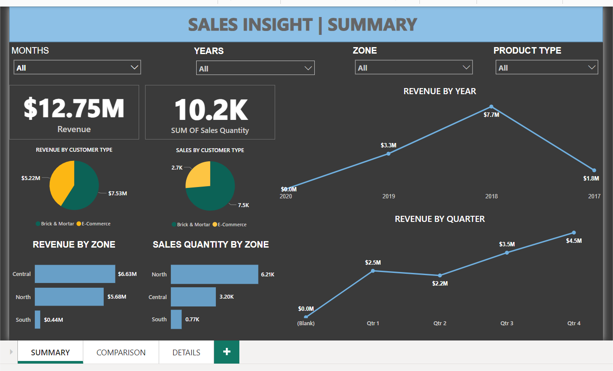
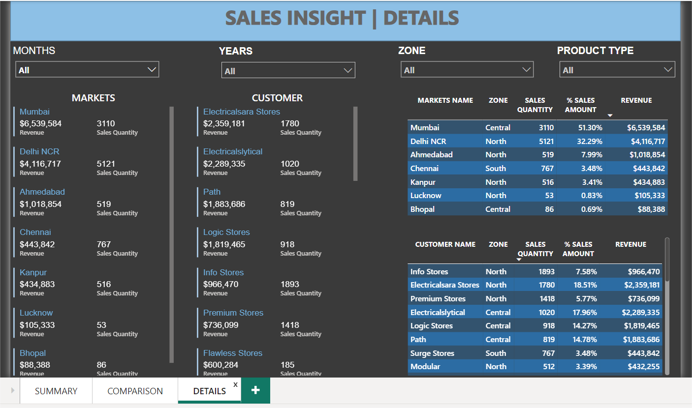

Company Sales Insight
Tools: Power BI and SQL
Introduction:
The Sales Insight Report is a comprehensive project designed to analyze and visualize sales performance across various dimensions using SQL and Power BI. The SQL part involved thorough data cleaning to ensure accuracy and consistency of the data. The Power BI dashboard provides an interactive and dynamic view of critical sales metrics, helping in making informed decisions and understanding sales trends across different zones, customers, and markets.
Dashboard Details:
Summary:
The Summary Page provides an overview of key sales metrics, including revenue and total sales quantity (sales qty). It features visualizations for revenue and sales quantity by customer type and zone, as well as charts showing revenue by year and quarter. This page offers insights into overall sales performance and trends.
Comparison:
The Comparison Page focuses on identifying top and bottom performers. It includes visualizations highlighting the top and bottom markets and customers by sales volume, enabling a clear comparison of performance across different segments.

Details:
The Details Page offers an in-depth view of the sales data, featuring comprehensive tables that provide detailed information about sales by customers and markets. This page includes all the necessary details to conduct granular analysis and understand specific sales dynamics across different segments.
